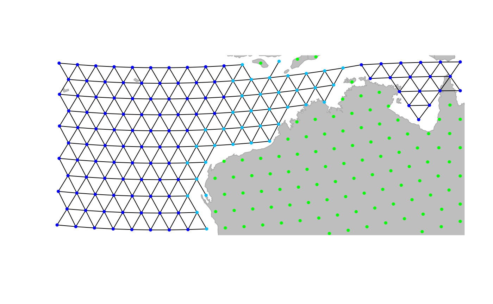

An introduction to geoGraph
Thibaut Jombart and Andrea Manica
2023-12-07
geograph.RmdgeoGraph: walking through the geographic space using graphs.
This document describes the geoGraph package for the R software. geoGraph aims at implementing graph approaches for geographic data. In geoGraph, a given geographic area is modelled by a fine regular grid, where each vertice has a set of spatial coordinates and a set of attributes, which can be for instance habitat descriptors, or the presence/abundance of a given species. ‘Travelling’ within the geographic area can then be easily modelled as moving between connected vertices. The cost of moving from one vertex to another can be defined according to attribute values, which allows for instance to define friction routes based on habitat.
geoGraph harnesses the full power of graph algorithms implemented in R by the graph and RBGL (R Boost Graph Library) packages. In particular, RBGL is an interface between R and the comprehensive Boost Graph Library in C++, which provides fast and efficient implementations of a wide range of graph algorithms. Once we have defined frictions for an entire geographic area, we can easily, for instance, find the least costs path from one location to another, or find the most parsimonious way of connecting a set of locations.
Interfacing spatial data and graphs can be a complicated task. The
purpose of geoGraph is to provide tools to achieve and simplify
this ‘preliminary’ step. This is achieved by defining new classes of
objects which are essentially geo-referenced graphs with node attributes
(gGraph objects), and interfaced spatial data
(gData objects). In this vignette, we show how to install
geoGraph, construct and handle
gGraph/gData objects, and illustrate some
basic features of graph algorithms.
First steps
Installing the package
All the following instructions should be entered from a new R session to avoid errors due to installing attached packages.
devtools is also needed to install geoGraph:
install.packages("devtools")Then, to install geoGraph, simply type:
Once installed, the package can be loaded using:
library("geoGraph")If you have an error regarding missing packages, you may need to install manually the packages graph and RBGL from Bioconductor:
install.packages("BiocManager")
BiocManager::install(c("graph", "RBGL"))And then attempt to reinstall geoGraph from GitHub.
Data representation
Data representation refers to the way a given type of data is handled
by a computer program. Two types of objects are used in
geoGraph: gGraph, and gData objects.
Both objects are defined as formal (S4) classes and often have methods
for similar generic function (e.g. getNodes is defined for
both objects). Essentially, gGraph objects contain
underlying layers of informations, including a spatial grid and possibly
node attributes, and covering the area of interest. gData
are sets of locations (like sampled sites, for instance) which have been
interfaced to a gGraph object, to allow further
manipulations such as finding paths on the grid between pairs of
locations.
gGraph objects
The definition of the formal class gGraph can be
obtained using:
getClass("gGraph")## Class "gGraph" [package "geoGraph"]
##
## Slots:
##
## Name: coords nodes.attr meta graph
## Class: matrix data.frame list graphNELand a new empty object can be obtained using the constructor:
new("gGraph")##
## === gGraph object ===
##
## @coords: spatial coordinates of 0 nodes
## lon lat
##
## @nodes.attr: 0 nodes attributes
## data frame with 0 columns and 0 rows
##
## @meta: list of meta information with 0 items
##
## @graph:
## A graphNEL graph with undirected edges
## Number of Nodes = 0
## Number of Edges = 0The documentation ?gGraph explains the basics about the
object’s content. In a nutshell, these objects are spatial grids with
nodes and segments connecting neighbouring nodes, and additional
informations on the nodes or on the graph itself. coords is
a matrix of longitudes and latitudes of the nodes.
nodes.attr is a data.frame storing attributes of the nodes,
such as habitat descriptors; each row corresponds to a node of the grid,
while each column corresponds to a variable. meta is a list
containing miscellanous informations about the graph itself. There is no
contraint applying to the components of the list, but some typical
components such as $costs or $colors will be
recognised by certain functions. For instance, you can specify plotting
rules for representing a given node attribute by a given color by
defining a component $colors. Similarly, you can associate
costs to a given node attribute by defining a component
$costs. An example of this can be found in already existing
gGraph objects. For instance, worldgraph.10k
is a graph of the world with approximately 10,000 nodes, and only
on-land connectivity
(\textit{i.e.no travelling on the seas). ```{r } worldgraph.10k worldgraph.10k@meta ``` Lastly, thegraphcomponent is agraphNEL`
object, which is the standard class for graphs in the graph and
RBGL packages. This object contains all information on the
connections between nodes, and the weights (costs) of these
connections.
Four main gGraph are provided with geoGraph:
rawgraph.10k, rawgraph.40k,
worldgraph.10k, and worldgraph.40k. These
datasets are available using the command data. The grid
used in these datasets are the best geometric approximation of a regular
grid for the surface of a sphere. One advantage of working with these
grids is that we do not have to use a projection for geographic
coordinates, which is a usual issue in regular GIS.
The difference between rawgraphs and worldgraphs is that the first
are entirely connected, while in the second connections occur only on
land. Numbers 10k' and40k’ indicate that the grids consist
of roughly 10,000 and 40,000 nodes. For illustrative purposes, we will
often use the 10k grids, since they are less heavy to handle. For most
large-scale applications, the 40k versions should provide sufficient
resolution. New gGraph can be constructed using the
constructor (new(...)), but this topic is not documented in
this vignette.
gData objects
gData are essentially sets of locations that are
interfaced with a gGraph object. During this operation,
each location is assigned to the closest node on the grid of the
gGraph, then allowing for travelling between locations
using the grid. Then, it is for instance possible to find the shortest
path between two locations through various types of habitats.
Like for gGraph, the content of the formal class
gData can be obtained using:
getClass("gData")## Class "gData" [package "geoGraph"]
##
## Slots:
##
## Name: coords nodes.id data gGraph.name
## Class: matrix character ANY characterand a new empty object can be obtained using the constructor:
new("gData")##
## === gData object ===
##
## @coords: spatial coordinates of 0 nodes
## lon lat
##
## @nodes.id: nodes identifiers
## character(0)
##
## @data: data
## NULL
##
## Associated gGraph:As before, the description of the content of these objects can be
found in the documentation (?gData). coords is
a matrix of xy (longitude/latitude) coordinates in which each row is a
location. nodes.id is vector of characters giving the name
of the vertices matching the locations; this is defined automatically
when creating a new gData, or using the function
closestNode. data is a slot storing data
associated to the locations; it can be any type of object, but a
data.frame should cover most requirements for storing data. Note that
this object should be subsettable (i.e. the [ operator
should be defined), so that data can be subsetted when subsetting the
gData object. Lastly, the slot gGraph.name
contains the name of the gGraph object to which the
gData has been interfaced.
Contrary to gGraph objects, gData objects
will frequently be constructed by the user. In the next sections, we
illustrate how we can build and use gData objects from a
set of locations.
Using geoGraph
An overview of the material implemented in the package is summarized the package’s manpage, accessible via:
?geoGraphThe html version of this manpage may be preferred to browse more easily the content of geoGraph; it is accessible by typing:
help("geoGraph", package = "geoGraph", html = TRUE)To revert help back to text mode, simply type:
options(htmlhelp = FALSE)In the following, we go through various tasks that can be achieve using geoGraph.
Importing geographic data
GeoGraphic data consist of a set of locations, possibly accompanied
by additional information. For instance, one may want to study the
migrations amongst a set of biological populations with known geographic
coordinates. In geoGraph, geographic data are stored in
gData objects. These objects match locations to the closest
nodes on a grid (a gGraph object), and store additional
data if needed.
As a toy example, let us consider four locations: Bordeaux (France), London (UK), Malaga (Spain), and Zagreb (Croatia). Since we will be working with a crude grid (10,000 nodes), locations need not be exact. We enter the longitudes and latitudes (in this order, that is, xy coordinates) of these cities in decimal degrees, as well as approximate population sizes:
Bordeaux <- c(-1, 45)
London <- c(0, 51)
Malaga <- c(-4, 37)
Zagreb <- c(16, 46)
cities.dat <- rbind.data.frame(Bordeaux, London, Malaga, Zagreb)
colnames(cities.dat) <- c("lon", "lat")
cities.dat$pop <- c(1e6, 13e6, 5e5, 1.2e6)
row.names(cities.dat) <- c("Bordeaux", "London", "Malaga", "Zagreb")
cities.dat## lon lat pop
## Bordeaux -1 45 1.0e+06
## London 0 51 1.3e+07
## Malaga -4 37 5.0e+05
## Zagreb 16 46 1.2e+06We load a gGraph object which contains the grid that
will support the data:
worldgraph.10k##
## === gGraph object ===
##
## @coords: spatial coordinates of 10242 nodes
## lon lat
## 1 -180.00 90.00
## 2 144.00 -90.00
## 3 -33.78 27.19
## ...
##
## @nodes.attr: 1 nodes attributes
## habitat
## 1 sea
## 2 sea
## 3 sea
## ...
##
## @meta: list of meta information with 2 items
## [1] "$colors" "$costs"
##
## @graph:
## A graphNEL graph with undirected edges
## Number of Nodes = 10242
## Number of Edges = 6954
plot(worldgraph.10k)(we could use worldgraph.40k for a better resolution).
In this figure, each node is represented with a color depending on the
habitat type, either ‘sea’ (blue) or ‘land’ (green). We are going to
interface the cities data with this grid; to do so, we create a
gData object using new (see
?gData object):
cities <- new("gData", coords = cities.dat[, 1:2], data = cities.dat[, 3, drop = FALSE], gGraph.name = "worldgraph.10k")
cities##
## === gData object ===
##
## @coords: spatial coordinates of 4 nodes
## lon lat
## 1 -1 45
## 2 0 51
## 3 -4 37
## ...
##
## @nodes.id: nodes identifiers
## 1 2 3
## "5774" "6413" "4815"
## ...
##
## @data: 4 data
## pop
## Bordeaux 1.0e+06
## London 1.3e+07
## Malaga 5.0e+05
## ...
##
## Associated gGraph: worldgraph.10kThis figure illustrates the matching of original locations (black
crosses) to nodes of the grid (red circles). As we can see, an issue
occured for Bordeaux, which has been assigned to a node in the sea (in
blue). Locations can be re-assigned to nodes with restrictions for some
node attribute values using closestNode; for instance, here
we constrain matching nodes to have an habitat value
(defined as node attribute in worldgraph.10k) equalling
land (green points):
cities <- closestNode(cities, attr.name = "habitat", attr.value = "land")
plot(cities, type = "both", reset = TRUE)
plotEdges(worldgraph.10k)Now, all cities have been assigned to a
land' node of the grid (again, better accuracy will be gained on 40k or finer grids - we use 10k for illustrative purposes only). Content ofcitiescan be accessed via various accessors (see?gData`).
For instance, we can retrieve original locations, assigned nodes, and
stored data using:
getCoords(cities)## lon lat
## 5775 -1 45
## 6413 0 51
## 4815 -4 37
## 7699 16 46
getNodes(cities)## 5774 6413 4815 7699
## "5775" "6413" "4815" "7699"
getData(cities)## pop
## Bordeaux 1.0e+06
## London 1.3e+07
## Malaga 5.0e+05
## Zagreb 1.2e+06We can also get the coordinates of the matching nodes (, red circle on previous figure) using:
getCoords(cities, original = FALSE)## lon lat
## 5775 1.002e-05 43.73
## 6413 1.002e-05 51.38
## 4815 -3.788e+00 37.75
## 7699 1.548e+01 46.74More interestingly, we can now retrieve all the geographic
information contained in the underlying grid (, gGraph
object) as node attributes:
getNodesAttr(cities)## habitat
## 5775 land
## 6413 land
## 4815 land
## 7699 landIn this example, the information stored in
worldgraph.10k is rather crude: habitat only
distinguishes the land from the sea. However, more complex habitat
information could be incorporated, for instance from GIS shapefiles (see
dedicated section below).
Visualizing data
An essential aspect of spatial analysis lies in visualizing the data.
In geoGraph, the spatial grids (gGraph) and
spatial data (gData) can be plotted and browsed using a
variety of functions.
Plotting gGraph objects
Displaying a gGraph object is done through
plot and points functions. The first opens a
new plotting region, while the second draws in the current plotting
region; functions have otherwise similar arguments (see
?plot.gGraph).
By default, plotting a gGraph displays the grid of nodes
overlaying a shapefile (by default, the landmasses). Edges can be
plotted at the same time (argument edges), or added
afterwards using plotEdges. If the gGraph
object possesses an adequately formed meta$colors
component, the colors of the nodes are chosen according to the node
attributes and the color scheme specified in meta$colors.
Alternatively, the color of the nodes can be specified via the
col argument in plot/points.
Here is an example using worldgraph.10k:
worldgraph.10k@meta$colors## habitat color
## 1 sea blue
## 2 land green
## 3 mountain brown
## 4 landbridge light green
## 5 oceanic crossing light blue
## 6 deselected land lightgray
head(getNodesAttr(worldgraph.10k))## habitat
## 1 sea
## 2 sea
## 3 sea
## 4 sea
## 5 sea
## 6 sea
table(getNodesAttr(worldgraph.10k))## habitat
## deselected land land sea
## 290 2632 7320It may be worth noting that plotting gGraph objects
involves plotting a fairly large number of points and edges. On some
graphical devices, the resulting plotting can be slow. For instance, one
may want to disable cairo under linux: this graphical
device yields better graphics than Xlib, but at the expense
of increase computational time. To switch to Xlib,
type:
X11.options(type = "Xlib")and to revert to cairo, type:
X11.options(type = "cairo")Zooming in and out, sliding, etc.
In practice, it is often useful to be able to peer at specific
regions, and more generally to navigate inside the graphical
representation of the data. For this, we can use the interactive
functions geo.zoomin, geo.zoomout,
geo.slide, geo.back,
geo.bookmark, and geo.goto. The zoom and slide
functions require to left-click on the graphics to zoom in, zoom out, or
slide to adjacent areas; in all cases, a right click ends the function.
Also note that geo.zoomin can accept an argument specifying
a rectangular region, which will be adapted by the function to fit best
a square area with similar position and centre, and zoom to this area
(see ?geo.zoomin). geo.bookmark and
geo.goto respectively set and go to a bookmark,
i.e. a tagged area. This is most useful when one has to switch
between distant areas repeatedly.
Here are some examples based on the previous plotting of
worldgraph.10k: Zooming in:
Zooming out:
Sliding to the east:
One important thing which makes plotting gGraph objects
different from most other plotting in R is that geoGraph
keeps the changes made to the plotting area in memory. This allows to
undo one or several moves using geo.back. Moreover, even if
the graphical device is killed, plotting again a gGraph
will use the old parameters by default. To disable this behavior, set
the argument reset=TRUE when calling upon
plot. Technically, this ‘plotting memory’ is implemented by
storing plotting information in an environment defined as the hidden
environment geoGraph:::.geoGraphEnv:
ls(env = geoGraph:::.geoGraphEnv)## [1] "bookmarks" "last.plot" "last.plot.param" "last.points"
## [5] "psize" "sticky.points" "usr" "zoom.log"You can inspect individual variables within this environment:
get("last.plot.param", envir = geoGraph:::.geoGraphEnv)## $psize
## [1] 0.5
##
## $pch
## [1] 19However, it is recommended not to modify these objects directly,
unless you really know what you are doing. In any case, plotting a
gGraph object with argument reset=TRUE will
remove previous plotting history and undo possible wrong
manipulations.
Plotting gData objects
gData objects are by default plotted overlaying the
corresponding gGraph. For instance, using the
cities example from above:
Note the argument reset=TRUE, which tells the plotting
function to adapt the plotting area to the geographic extent of the
dataset.
To plot additional information, it can be useful to extract the
spatial coordinates from the data. This is achieved by
getCoords. This method takes an extra argument
original, which is TRUE if original spatial coordinates are
seeked, or FALSE for coordinates of the nodes on the grid. We can use
this to represent, for instance, the population sizes for the different
cities:
transp <- function(col, alpha = .5) {
res <- apply(col2rgb(col), 2, function(c) rgb(c[1] / 255, c[2] / 255, c[3] / 255, alpha))
return(res)
}
plot(cities, reset = TRUE)
par(xpd = TRUE)
text(getCoords(cities) + -.5, rownames(getData(cities)))
symbols(getCoords(cities)[, 1], getCoords(cities)[, 2], circ = sqrt(unlist(getData(cities))), inch = .2, bg = transp("red"), add = TRUE)Editing gGraphs
Editing graphs is an essential task in geoGraph. While
available gGraph objects provide a basis to work with (see
?worldgraph.10k), one may want to adapt a graph to a
specific case. For instance, connectivity should be defined according to
biological knowledge of the organism under study. gGraph
can be modified in different ways: by changing the connectivity, the
costs of edges, or the attribute values.
Changing the global connectivity of a gGraph
There are two main ways of changing the connectivity of a
gGraph, which match two different objectives. The first
approach is to perform global and systematic changes of the connectivity
of the graph. Typically, one will want to remove all connections over a
given type of landscape, which is uncrossable by the organism under
study. Let’s assume we are interested in saltwater fishes. To model fish
dispersal, we have to define a graph which connects only nodes
overlaying the sea. We load the gGraph object
rawgraph.10k, and zoom in to a smaller area (Madagascar) to
illustrate changes in connectivity:
geo.zoomin(c(35, 54, -26, -10))
plotEdges(rawgraph.10k)We shall set a bookmark for this area, in case we would want to get back to this place later on:
geo.bookmark("madagascar")##
## Bookmark ' madagascar 'saved.What we now want to do is remove all but sea-sea connections. To do so, the easiest approach is to i) define costs for the edges based on habitat, with land being given large costs and ii) remove all edges with large costs.
Costs of a given node attribute (here,
habitat') are indicated in themeta$costs` slot:
rawgraph.10k@meta$costs## habitat cost
## 1 sea 100
## 2 land 1
## 3 mountain 10
## 4 landbridge 5
## 5 oceanic crossing 20
## 6 deselected land 100
newGraph <- rawgraph.10k
newGraph@meta$costs[2:6, 2] <- 100
newGraph@meta$costs[1, 2] <- 1
newGraph@meta$costs## habitat cost
## 1 sea 1
## 2 land 100
## 3 mountain 100
## 4 landbridge 100
## 5 oceanic crossing 100
## 6 deselected land 100We have just changed the costs associated to habitat type, but this
change is not yet effective on edges between nodes. We use
setCosts to set the cost of an edge to the average of the
costs of its nodes:
On this new graph, we represent the edges with a width inversely
proportional to the associated cost; that is, bold lines for easy
travelling and light edges/dotted lines for more costly mouvement. This
is not enough yet, since travelling on land is still possible. However,
we can tell geoGraph to remove all edges associated to too
strong a cost, as defined by a given threshold (using
dropDeadEdges). Here, only sea-sea connections shall be
retained, that is, edges with cost 1.
newGraph <- dropDeadEdges(newGraph, thres = 1.1)
plot(newGraph, edge = TRUE)Here we are: newGraph only contains connections in the
sea. Note that, although we restrained the plotting area to Madagascar,
this change is effective everywhere. For instance, travelling to the
nort-west Australian coasts:
geo.zoomin(c(110, 130, -27, -12))
geo.bookmark("australia")##
## Bookmark ' australia 'saved.Changing local properties of a gGraph
A second approach to changing a gGraph is to refine the
graph by hand, adding or removing locally some connections, or altering
the attributes of some nodes. This can be necessary to connect
components such as islands to the main landmasses, or to correct
erroneous data. Adding and removing edges from the grid of a
gGraph can be achieved by geo.add.edges and
geo.remove.edges, respectively. These functions are
interactive, and require the user to select individual nodes or a
rectangular area in which edges are added or removed. See
?geo.add.edges for more information on these functions. For
instance, we can remove a few odd connections in the previous graph,
near the Australian coasts (note that we have to save the changes using
<-):
geo.goto("australia")
newGraph <- geo.remove.edges(newGraph)
img
When adding connections within an area or in an entire graph, node
addition is based on another gGraph,i.e. only
connections existing in another gGraph serving as reference
can be added to the current gGraph. For graphs based on 10k
or 40k grids, the raw graphs provided in geoGraph should be
used, (rawgraph.10k, rawgraph.40k), since they
are fully connected.
In addition to changing grid connectivity, we may also want to modify
the attributes of specific nodes. This is again done interactively,
using the function geo.change.attr. For instance, here, we
define a new value shalowwater (plotted in light blue) for
the attribute habitat, selecting affected nodes using the
‘area’ mode first, and refining the changes using the ‘point’ mode:
plot(newGraph, edge = TRUE)
temp <- geo.change.attr(newGraph, mode = "area", attr.name = "habitat", attr.value = "shallowwater", newCol = "deepskyblue")
temp <- geo.change.attr(temp, attr.name = "habitat", attr.value = "shallowwater", newCol = "deepskyblue")
newGraph <- temp
newGraph@meta$colors## habitat color
## 1 sea blue
## 2 land green
## 3 mountain brown
## 4 landbridge light green
## 5 oceanic crossing light blue
## 6 deselected land lightgray
## 7 shallowwater deepskyblue
plot(newGraph, edge = TRUE)
Again, note that the changes made to the graph have to be save in an
object (using <-) to be effective.
Extracting information from GIS shapefiles
An important feature of geoGraph is serving as an interface
between geographic information system (GIS) layers and
geographic data. As currently implemented, geoGraph can extract
information from shapefiles with the Arc GIS (http://www.esri.com/software/arcgis/index.html) format,
using the function extractFromLayer. Here, we illustrate
this procedure using the shapefile world-countries.shp
provided with the package. geoGraph still relies on
SpatialPolygonDataFrame objects from the sp
package. A move to sf objects is planned, but for the
moment we have to use sf::st_read() to read a GIS shapefile
into an sf object, and then cast it to a
SpatialPolygonDataFrame with
sf::as_Spatial():
## Linking to GEOS 3.10.2, GDAL 3.4.1, PROJ 8.2.1; sf_use_s2() is TRUE
world.countries <- sf::st_read(system.file("files/shapefiles/world-countries.shp", package = "geoGraph"))## Reading layer `world-countries' from data source
## `/home/runner/work/_temp/Library/geoGraph/files/shapefiles/world-countries.shp'
## using driver `ESRI Shapefile'
## Simple feature collection with 239 features and 8 fields
## Geometry type: MULTIPOLYGON
## Dimension: XY
## Bounding box: xmin: -180 ymin: -89.9 xmax: 181.8 ymax: 84.93
## CRS: NA
world.countries <- sf::as_Spatial(world.countries)
class(world.countries)## [1] "SpatialPolygonsDataFrame"
## attr(,"package")
## [1] "sp"
summary(world.countries)## Length Class Mode
## 239 SpatialPolygonsDataFrame S4The summary of world.countries shows the data
(attributes) stored in the layer. Let us assume that we are interested
in retrieving continent and country information for the
worldgraph.10k object. Note that
extractFromLayer can extract information to other types of
objects than gGraph (see
?extractFromLayer)
summary(getNodesAttr(worldgraph.10k))## habitat
## deselected land: 290
## land :2632
## sea :7320
newGraph <- extractFromLayer(worldgraph.10k, layer = world.countries, attr = c("CONTINENT", "NAME"))
summary(getNodesAttr(newGraph))## habitat CONTINENT NAME
## deselected land: 290 Length:10242 Length:10242
## land :2632 Class :character Class :character
## sea :7320 Mode :character Mode :characterThe new object newGraph is a gGraph which
now includes, for each node of the grid, the corresponding continent and
country retrieved from the GIS layer. We can use the newly acquired
information for plotting newGraph, by defining new color
rules:
temp <- unique(getNodesAttr(newGraph)$"NAME")
col <- c("transparent", rainbow(length(temp) - 1))
colMat <- data.frame(NAME = temp, color = col)
head(colMat)## NAME color
## 1 <NA> transparent
## 2 Antartica #FF0000
## 3 Saudi Arabia #FF0B00
## 4 Yemen #FF1500
## 5 Somalia #FF2000
## 6 China #FF2B00
tail(colMat)## NAME color
## 140 Latvia #FF0040
## 141 Belarus #FF0035
## 142 Eritrea #FF002A
## 143 Djibouti #FF0020
## 144 East Timor #FF0015
## 145 Jordan #FF000B
plot(newGraph, col.rules = colMat, reset = TRUE)This information could in turn be used to define costs for travelling on the grid. For instance, one could import habitat descriptors from a GIS, use these values to formulate a habitat model, and derive costs for dispersal on the grid.
As soon as a GIS layer has been extracted to a gGraph,
this information becomes also available for any gData
interfaced with this object. For instance, we can re-use the
cities example defined in a previous section, and interface
it with newGraph to retrieve continent and country
information for the cities of the dataset:
cities.dat## lon lat pop
## Bordeaux -1 45 1.0e+06
## London 0 51 1.3e+07
## Malaga -4 37 5.0e+05
## Zagreb 16 46 1.2e+06
cities <- new("gData", coords = cities.dat[, 1:2], data = cities.dat[, 3, drop = FALSE], gGraph.name = "newGraph")
cities <- closestNode(cities, attr.name = "habitat", attr.value = "land")
getData(cities)## pop
## Bordeaux 1.0e+06
## London 1.3e+07
## Malaga 5.0e+05
## Zagreb 1.2e+06
getNodesAttr(cities)## habitat CONTINENT NAME
## 5775 land Europe France, Metropolitan
## 6413 land Europe United Kingdom
## 4815 land Europe Spain
## 7699 land Europe AustriaFinding least-cost paths
One of the most useful applications of geoGraph is the
research of least-cost paths between couples of locations. This can be
achieved using the functions dijkstraFrom and
dijkstraBetween on a gData object which
contains all the locations of interest. These functions return
least-cost paths with the format gPath.
dijkstraFrom compute the paths from a given node of the
grid to all locations of the gData, while
dijkstraBetween computes the paths between pairs of
locations of the gData. Below, we detail the example of the
documentation of these functions, which uses the famous dataset of
native Human populations, HGDP:
hgdp##
## === gData object ===
##
## @coords: spatial coordinates of 52 nodes
## lon lat
## 1 -3 59
## 2 39 44
## 3 40 61
## ...
##
## @nodes.id: nodes identifiers
## 28179 11012 22532
## "26898" "11652" "22532"
## ...
##
## @data: 52 data
## Population Region Label n Latitude Longitude Genetic.Div
## 1 Orcadian EUROPE 1 15 59 -3 0.7259
## 2 Adygei EUROPE 2 17 44 39 0.7298
## 3 Russian EUROPE 3 25 61 40 0.7320
## ...
##
## Associated gGraph: worldgraph.40k
plot(hgdp, reset = TRUE)Populations of the dataset are shown by red circles, while the
underlying grid (worldgraph.40k) is represented with colors
depending on habitat (blue: sea; green: land; pink: coasts). Population
genetics predicts that genetic diversity within populations should decay
as populations are located further away from the geographic origin of
the species. Here, we verify this relationship for a theoretical origin
in Addis abeba, Ethiopia. We shall seek all paths through landmasses to
the HGDP populations.
First, we check that all populations are connected on the grid using
isConnected:
isConnected(hgdp)## [1] TRUENote that in practice, we may often want to assess graphically the
connectivity of the underlying grid, especially if not all locations of
the gData are connected. This can be done using
connectivityPlot, which has methods for both
gGraph and gData, and represents different
connected components using different colors. For instance, for
worldgraph.10k:
connectivityPlot(worldgraph.10k, edges = TRUE, seed = 1)
geo.zoomin(c(90, 150, 18, -25))
title("Different connected components\n in worldgraph.10k")Since all locations in hgdp are connected, we can
proceed further. We have to set the costs of edges in the
gGraph grid. To do so, we can choose between i) strictly
uniform costs (using dropCosts) ii) distance-based costs –
roughly uniform – (using setDistCosts) or iii)
attribute-driven costs (using setCosts).
We shall first illustrate the strictly uniform costs. After setting a
gGraph with uniform costs, we use dijkstraFrom
to find the shortest paths between Addis abeba and the populations of
hgdp:
myGraph <- dropCosts(worldgraph.40k)
hgdp@gGraph.name <- "myGraph"
addis <- cbind(38, 9)
ori <- closestNode(myGraph, addis)
paths <- dijkstraFrom(hgdp, ori)## Loading required package: RBGLThe object paths contains the identified paths, which
are stored as a list with class gPath (see
?gPath). Paths can be plotted easily:
addis <- as.vector(addis)
plot(myGraph, col = NA, reset = TRUE)
plot(paths)
points(addis[1], addis[2], pch = "x", cex = 2)
text(addis[1] + 35, addis[2], "Addis abeba", cex = .8, font = 2)
points(hgdp, col.node = "black")In this graph, each path is plotted with a different color, but
several paths overlap in several places. We can extract the distances
from the
origin' usinggPath2dist, and then examine the relationship between genetic diversity within populations (stored inhgdp`)
and the distance from the origin:
div <- getData(hgdp)$"Genetic.Div"
dgeo.unif <- gPath2dist(paths, res.type = "vector")
plot(div ~ dgeo.unif, xlab = "GeoGraphic distance (arbitrary units)", ylab = "Genetic diversity")
lm.unif <- lm(div ~ dgeo.unif)
abline(lm.unif, col = "red")
summary(lm.unif)##
## Call:
## lm(formula = div ~ dgeo.unif)
##
## Residuals:
## Min 1Q Median 3Q Max
## -0.07327 -0.00660 0.00074 0.01015 0.05449
##
## Coefficients:
## Estimate Std. Error t value Pr(>|t|)
## (Intercept) 7.70e-01 4.58e-03 168.2 <2e-16 ***
## dgeo.unif -8.39e-04 5.31e-05 -15.8 <2e-16 ***
## ---
## Signif. codes: 0 '***' 0.001 '**' 0.01 '*' 0.05 '.' 0.1 ' ' 1
##
## Residual standard error: 0.0185 on 50 degrees of freedom
## Multiple R-squared: 0.833, Adjusted R-squared: 0.83
## F-statistic: 250 on 1 and 50 DF, p-value: <2e-16
title("Genetic diversity vs geographic distance \n uniform costs ")Alternatively, we can use costs based on habitat. As a toy example, we will consider that coasts are four times more favourable for dispersal than the rest of the landmasses. We define these new costs, and then compute and plot the corresponding shortest paths:
myGraph@meta$costs[7, ] <- c("coast", 0.25)
myGraph@meta$costs## habitat cost
## 1 sea 100
## 2 land 1
## 3 mountain 10
## 4 landbridge 5
## 5 oceanic crossing 20
## 6 deselected land 100
## 7 coast 0.25
myGraph <- setCosts(myGraph, attr.name = "habitat")
paths.2 <- dijkstraFrom(hgdp, ori)
plot(newGraph, col = NA, reset = TRUE)
plot(paths.2)
points(addis[1], addis[2], pch = "x", cex = 2)
text(addis[1] + 35, addis[2], "Addis abeba", cex = .8, font = 2)
points(hgdp, col.node = "black")The new paths are slightly different from the previous ones. We can examine the new relationship with genetic distance:
dgeo.hab <- gPath2dist(paths.2, res.type = "vector")
plot(div ~ dgeo.hab, xlab = "GeoGraphic distance (arbitrary units)", ylab = "Genetic diversity")
lm.hab <- lm(div ~ dgeo.hab)
abline(lm.hab, col = "red")
summary(lm.hab)##
## Call:
## lm(formula = div ~ dgeo.hab)
##
## Residuals:
## Min 1Q Median 3Q Max
## -0.11183 -0.00976 0.00133 0.01216 0.06413
##
## Coefficients:
## Estimate Std. Error t value Pr(>|t|)
## (Intercept) 0.770137 0.007174 107.36 < 2e-16 ***
## dgeo.hab -0.001421 0.000145 -9.79 3.2e-13 ***
## ---
## Signif. codes: 0 '***' 0.001 '**' 0.01 '*' 0.05 '.' 0.1 ' ' 1
##
## Residual standard error: 0.0265 on 50 degrees of freedom
## Multiple R-squared: 0.657, Adjusted R-squared: 0.651
## F-statistic: 95.9 on 1 and 50 DF, p-value: 3.21e-13
title("Genetic diversity vs geographic distance \n habitat costs ")Of course, the distinction between coasts and inner landmasses is a somewhat poor description of habitat. In practice, complex habitat models can be used as simply.